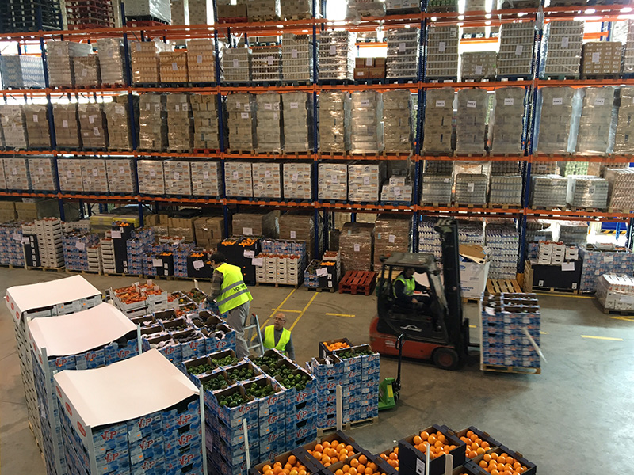

Distribució nacional
Cobertura a nivell estatal amb rutes optimitzades per reduir temps i costos.
FoodLogístic S.A connecta productors, distribuïdors i punts de venda amb solucions de transport i emmagatzematge eficients, segures i puntuals a tot el territori.
Contacta’nsCobertura a nivell estatal amb rutes optimitzades per reduir temps i costos.
Infraestructura adaptada per a productes frescos i refrigerats amb control de temperatura.
Seguiment de comandes en temps real i informes per a la teva presa de decisions.
Dissenyem solucions integrals per a pimes i clients professionals, adaptant-nos a les necessitats de cada cadena de subministrament.
Xarxa de vehicles equipats amb sistemes de refrigeració per garantir la qualitat dels productes frescos i congelats.
Magatzems especialitzats en alimentació amb processos de picking eficients per preparar comandes amb precisió.
Lliuraments flexibles a punts de venda, restaurants i centres de distribució amb franges horàries adaptades.
Sistemes de traçabilitat que permeten conèixer l’estat de cada enviament i generar informes personalitzats.
Disseny de rutes, freqüències i serveis adaptats a les necessitats específiques de cada client professional.
FoodLogístic S.A és una empresa capdavantera en la distribució i logística alimentària a nivell nacional, amb seu a Mataró. Treballem al costat de pimes i clients professionals per garantir que cada producte arribi en perfectes condicions.
Assegurar una cadena de subministrament alimentària eficient, segura i sostenible que connecti productors i punts de venda amb total confiança.
Ser el soci logístic de referència per al sector alimentari, impulsant la innovació i la digitalització en cada etapa del procés.
+15 anys d’experiència en logística alimentària · +300 clients actius · Col·laboracions amb cadenes de supermercats i distribuïdors de referència.

Explica’ns les necessitats logístiques del teu negoci i t’oferirem una proposta adaptada.